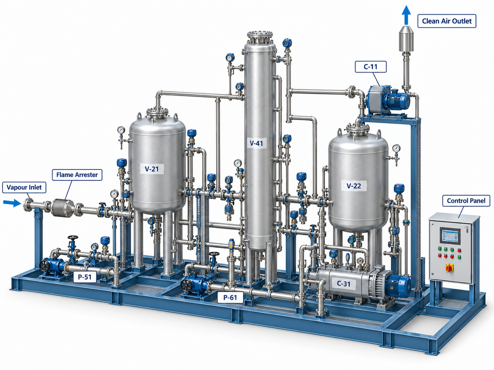

07 — Process skid systems
Recover valuable hydrocarbons. Reduce VOC emissions. Improve terminal safety.
01 — Product overview
The LINESIG Vapour Recovery Unit (VRU) is an engineered industrial system for collecting and treating fuel vapours displaced from road tanker, railcar, marine loading and storage operations. It is designed to reduce uncontrolled volatile organic compound (VOC) emissions while enabling recovery of reusable hydrocarbon product where technically and economically feasible.
LINESIG vapour recovery systems are engineered to capture and recover volatile hydrocarbon vapours released during fuel storage, transfer and loading operations. The systems can combine vapour collection, conditioning, adsorption or condensation, vapour recovery and automated controls in a packaged solution tailored to fuel properties, operating cycles and required emission limits.
For multi-tanker gantry systems, vapour from individual loading bays is routed through a common vapour-return header to a centralized recovery package, allowing the VRU to operate as an integrated part of the loading rack with batch, ESD and terminal automation interfaces.

Gasoline / motor spirit vapours; light petroleum and hydrocarbon solvent vapours; naphtha and compatible volatile liquid vapours; other VOC-bearing streams subject to compatibility assessment. Diesel, kerosene, jet fuel and heavier products may produce lower vapour loads, but applicability and recoverability must be confirmed for the operating conditions.
Important: VRU suitability depends on vapour composition, water content, oxygen content, contamination, temperature and flammability limits. Highly reactive, corrosive, polymerizing or incompatible streams require special engineering.
02 — Product range
Vapours pass through engineered activated-carbon beds. Depending on the selected design, the saturated bed is regenerated using a vacuum or other approved cycle, followed by recovery of the desorbed hydrocarbons.
Vapours are cooled under controlled conditions to condense recoverable hydrocarbon fractions. Cooling stages and any polishing step are selected for the actual vapour mixture.
A tailored combination of adsorption, condensation or other separation technology where the required capture performance and operating profile justify a hybrid arrangement.
Selection of the final technology, capacity and performance guarantees requires a project-specific engineering study.
03 — Benefits
04 — Process
05 — Scope of supply
06 — Technical specification
| Parameter | Engineering basis / available arrangement |
|---|---|
| System configuration | Packaged skid, modular or site-built |
| Process technology | Adsorption, condensation or integrated hybrid |
| Capacity | Designed to project vapour flow and loading profile |
| Hydrocarbon recovery | Duty-dependent; no blanket recovery guarantee |
| Vapour inlet pressure | Selected to site header and vessel design constraints |
| Operating mode | Automatic; intermittent or continuous duty as engineered |
| Vapour composition | Project-specific and verified against material compatibility |
| Mechanical construction | Carbon steel / stainless steel / specified corrosion-resistant materials |
| Area classification | Electrical and instruments selected to applicable hazardous area assessment |
| Process monitoring | Pressure, temperature, flow, level, alarm and selected emission signals |
| Control system | PLC/HMI with optional SCADA/DCS interface |
| Installation | Indoor/outdoor subject to ventilation and safety design |
| Component | Material / configuration direction |
|---|---|
| Vapour piping and vessels | Coated carbon steel or stainless steel per duty |
| Carbon adsorption beds | Vessel and activated carbon grade selected for hydrocarbon mix |
| Seals / gaskets | Hydrocarbon-compatible elastomer/PTFE solutions |
| Condensate equipment | CS / SS construction by fluid and corrosion considerations |
| Skid / supports | Painted CS or SS as specified |
| Electrical enclosure | Industrial / hazardous-area-rated as required |
| Instrumentation | Suitable metallurgy and process wetted materials |
Dual-bed or multiple-bed arrangements, where appropriate, allowing adsorption and regeneration sequencing.
Cooling-based recovery for suitable vapour composition and design temperatures.
Selected combination of recovery stages for difficult compositions or stringent discharge objectives.
Engineered vapour headers from loading lanes or other approved sources.
Communication with loading permissives, terminal monitoring and shutdown philosophy.
07 — Where it's used
Road tanker and railcar loading gantries; fuel transfer operations and vapour collection headers.
Vapour control from suitable vessel loading systems, subject to marine safety and interface requirements.
Selected tank vents, blending, loading and intermediate hydrocarbon transfer duties.
Gasoline and light-product truck loading and dispatch operations.
Compatible VOC-rich vapours from filling, packaging and bulk transfer operations.
08 — Control & safety
Each installation requires a documented process safety basis, including vapour composition, explosive atmosphere and ignition source assessment, maximum permissible pressure/vacuum, overfill/condensate handling, flame propagation protection, grounding/bonding, safe discharge routing and interface with terminal ESD systems. Relief, interlock and protective-device selection shall follow the relevant project hazard assessment and applicable codes. Emission compliance is established against the approved design case and measured performance, not inferred solely from installation of a VRU.
Redundant vapour-handling trains, standby instruments, continuous outlet VOC monitoring, hydrocarbon and oxygen analyzers, integrated flame-protection arrangements, nitrogen purging, remote communications, weatherproof enclosures, preassembled modular skids, remote service diagnostics and maintenance packages — subject to engineering validation and project requirements.
09 — Ordering information
Discuss your vapour flow, products and emission objectives with the LINESIG engineering team to develop a project-specific Vapour Recovery Unit configuration.
Request a quote